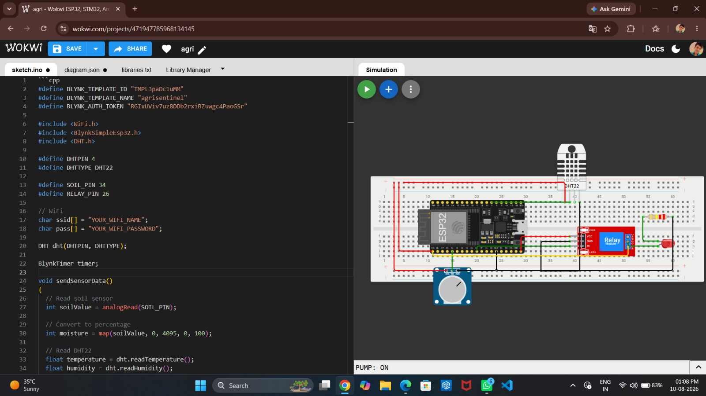
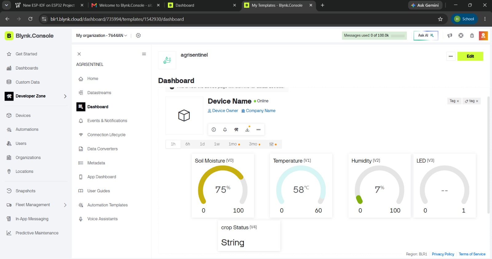

Secure AIoT Guardian for Smart Farming
Explore ProjectAgriSentinel is an IoT and cybersecurity-based smart agriculture system that monitors soil moisture, temperature, and humidity, automates irrigation, predicts crop stress, and detects sensor tampering in real time.
The complete ESP32 circuit was tested in Wokwi using a potentiometer to simulate soil moisture, DHT11 for environmental sensing, and an LED to represent the irrigation pump.

Real-time sensor values are displayed on the Blynk cloud dashboard, enabling remote monitoring and alerts for the farmer.

Hardware & Integration
Cloud Dashboard
Security & Innovation